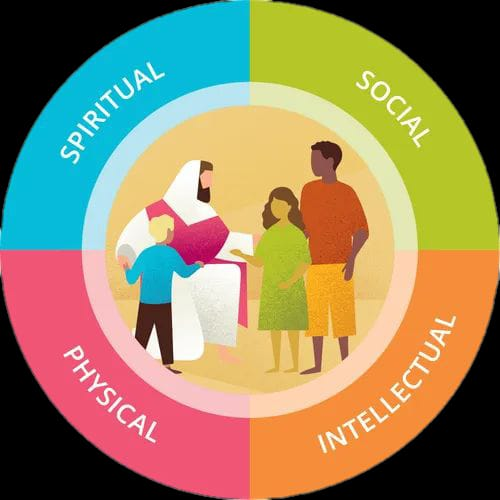

Activities Ideas
“Train up a child in the way he should go: and when he is old, he will not depart from it.” — Proverbs 22:6

Tiny hands. True disciples.
“Train up a child in the way he should go: and when he is old, he will not depart from it.” — Proverbs 22:6